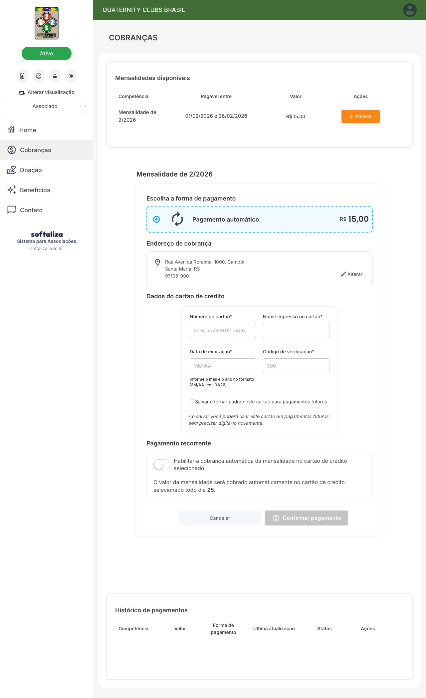
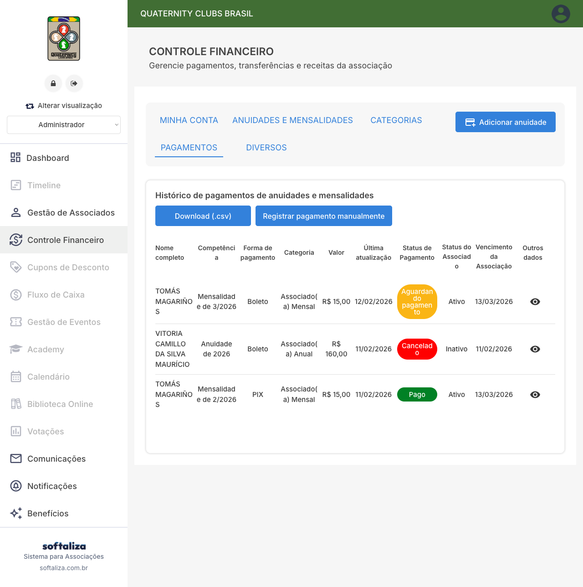

Neste cenário validado no ambiente QCB, o associado está na modalidade Associado(a) Mensal e a cobrança apresenta somente Pagamento automático via cartão. A recorrência mensal fica padronizada para esta modalidade, reduzindo inadimplência por esquecimento e simplificando a continuidade de cobrança.
Regra operacional importante: a associação pode configurar, por modalidade, se quer disponibilizar Pix, boleto e cartão ou apenas pagamento automático. Portanto, as opções exibidas para o associado variam conforme a parametrização vigente.

Caminho: Associado > Cobranças > PAGAR. Na competência mensal, selecione Pagamento automático. Ao selecionar, a interface exibe os blocos de endereço, dados de cartão e regras da recorrência.
Marque Salvar e tornar padrão este cartão para pagamentos futuros. Isso evita redigitação nas próximas cobranças e melhora a experiência de renovação recorrente.
Após preencher número, nome no cartão, validade e CVV, conclua em Confirmar pagamento. A UI informa que a cobrança da mensalidade será feita automaticamente no dia configurado para o ciclo mensal.
No cadastro administrativo do associado (Histórico de Pagamentos), confirme modalidade, competências e coluna de status/forma de pagamento para análise individual.

No painel financeiro, a associação acompanha status das cobranças, vencimentos e forma de pagamento em visão consolidada para operação e suporte.